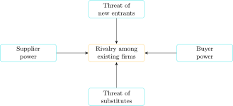

Model
Porter (1980): competitive strategy aims at a profitable and sustainable position against the forces that determine competition in an industry.
| # | Force | Stronger (worse for firms) when… |
|---|---|---|
| 1 | Rivalry | many similar-size rivals; slow growth; little |
| differentiation (price war); high fixed costs; high | ||
| exit barriers (specialized, costly machines) | ||
| 2 | Supplier power | few big suppliers; costly switching; no substitute |
| inputs; dispersed weak customers; suppliers may | ||
| consolidate or integrate forward | ||
| 3 | Buyer power | few large buyers; many small suppliers with high |
| fixed costs; substitutes exist; cheap switching; | ||
| price-sensitive buyers; backward integration threat | ||
| 4 | New entrants | low barriers: no patents, no scale economies, low |
| fixed costs, no experience curve, free access to raw | ||
| materials and channels, no state barriers | ||
| 5 | Substitutes | good price/performance of substitutes, low brand |
| loyalty, low switching costs |
Determinants in detail
- Rivalry: concentration and balance among competitors, industry growth, fixed costs, product differentiation. Exit barriers: specialized investments, one-off exit costs, interrelations with other businesses, emotional barriers, social and government constraints.
- Suppliers / buyers (symmetric lists): number of important players, availability of substitutes, switching costs, threat of forward (downstream) or backward (upstream) integration, their contribution to quality, their contribution to industrial cost.
- Entry barriers: economies of scale, product differentiation, brand identity, access to distribution channels, capital requirements, absolute cost advantages; government measures: protection, industry regulation, duties and exchange rates.
- Substitutes: almost interchangeable products, conversion costs, aggressiveness and profitability of substitute producers, price–value of the substitute.
Worked example
Coca-Cola (soft drinks):
| Force | Level | Why |
|---|---|---|
| New entrants | low | very high barriers: brand, scale, bottlers |
| Supplier power | low | commodities (sugar, cans), efficient buying |
| Buyer power | medium | demanding large retail chains (GDO) |
| Substitutes | high | water, juices, healthy alternatives |
| Rivalry | very high | Pepsi and others |
Strategy chosen: global differentiation — brand and value, innovation, capillary distribution. Supported in the value chain by logistics and production (economies of scale), marketing and sales (iconic brand), R&D (new products), procurement (purchasing power).
Method
For an exam case: (1) define the industry; (2) rate each force low/medium/high with two determinants each; (3) conclude on attractiveness; (4) state which generic strategy defends best and which value-chain activities support it.
Pitfall
A buyer with many alternatives is powerful even if small. Substitutes satisfy the same need with a different product (train vs plane); a competitor sells the same product. Strengths: good for industry analysis and input to SWOT. Weaknesses: built for single businesses, ignores portfolio synergies of large groups; can underrate core competences — combine with the value chain.
Recall
Draw the five forces, give three determinants of each, rate them for Coca-Cola.
Picture

The four outer forces shape the intensity of rivalry and therefore industry profitability.